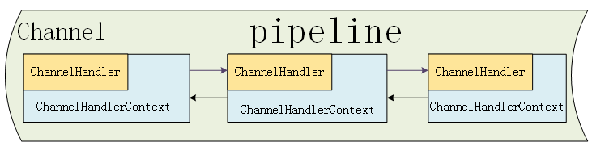

Netty之Pipeline
2019-08-03
次访问
本文主要针对 Netty 中的事件流处理模型做初步探索。
事件流的作用
Netty 的 ChannelPipeline 和 ChannelHandler 的机制类似于 Servlet 和 Filter 过滤器，实际上是责任链模式的一种变形，主要目的是为了方便事件的拦截和用户业务逻辑的定制。
事件流的机制
Netty 将 Channel 的数据管道抽象为 ChannelPipeline，消息在 ChannelPipeline 中流动和传递。
ChannelPIpeline 持有 I/O 事件拦截器 ChannelHandler 的链表，由 ChannelHandler 对 I/O 事件进行拦截和处理。
ChannelContext、ChannelHandler 和 ChannelPipeline 的关系如下图所示。

从上图可以看出：
- 每一个 Channel 对应一个 Pipeline，该 Pipeline 处理Channel上面的IO事件；
- 每一个 Pipeline 又由若干 ChannelContext 组成一个双向链表；
- 每一个 ChannelContext 里面持有 ChannelHandler 去做实际的拦截工作。
ChannelContext 里面有标志位来区分其是 InboundChannelHandler 还是 OutboundChannelHandler。
其继承关系图如下：

可以看到：
Inbound 事件主要是链路事件：注册/取消注册、激活/非激活、读事件，调用下一个 ChannelContext 的方法以 fireXXXX 开头；
Outbound 事件主要是链路连接、绑定、链路写等 socket 事件。
其在 pipeline 中的流向也是相反的，示意图如下：

（全文完）
参考资料
- 《Netty 权威指南》
- Netty 源码分析之 二 贯穿Netty 的大动脉